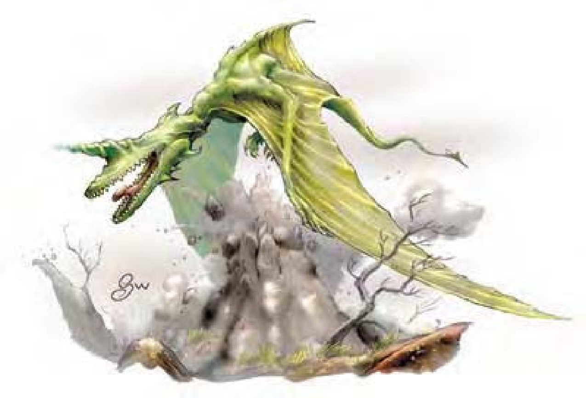

| 资料栏位 | 角翼魔兽 (Yrthak) 超大型魔法兽 |
|---|---|
| 生命骰 | 12d10+36 (102HP) |
| 先攻 | +6 |
| 速度 | 20英尺 (4格)、飞行60英尺 (普通) |
| 防御等级 | 18 (-2体型、+2敏捷、+8天生)、接触10、措手不及16 |
| 基本攻击/擒抱 | +12 / +25 |
| 攻击 | 啮咬+15近战 (2d8+5)；或音波束+12远程 (6d6) |
| 全力攻击 | 啮咬+15近战 (2d8+5) 及2爪抓+13近战 (1d6+2)；或音波束+12远程 (6d6) |
| 占据/触及 | 15英尺 / 10英尺 |
| 特殊攻击 | 音波束、音波震爆 |
| 特殊能力 | 盲感120英尺、免疫、易受音波伤害 |
| 豁免 | 强韧+11、反射+10、意志+5 |
| 属性 | 力量20、敏捷14、体质17、智力7、感知13、魅力11 |
| 技能 | 聆听+12、潜行+10 |
| 专长 | 坚韧、空袭、精通先攻、多重攻击、攫取 |
| 环境 | 温带山脉 |
| 组织 | 单独或数尾 (2-4) |
| 挑战级数 | 9 |
| 宝藏 | 无 |
| 阵营 | 偏向绝对中立 |
| 进化 | 13-16HD (超大型)；17-36HD (巨型) |
| 等级修正值 | ― |
角翼魔兽是体型巨大的飞行爬虫类，色泽黄绿，没有眼睛，生有一肉翅和一条长尾，背上有鳍，头部状似鳄鱼，但头顶有一个角状突起。
角翼魔兽生性狡猾而且刁钻，虽然是杂食性但偏好肉类。它们会在偏僻的山峰高处筑巢，觅食时甚至会长途跋涉数天，偶而才会返回巢穴。角翼魔兽有时会在离地100英尺以上的高空巡逻以搜寻猎物。角翼魔兽长约20英尺，翼展40英尺，重达5000磅。虽然具有智慧，但角翼魔兽不会说话。
战斗角翼魔兽偏好在空中战斗，以音波对地面来回攻击或攫取猎物然后再从空中扔下来（等敌人摔成肉饼之后，才会降落在地面大快朵颐）。
音波束（超自然）：角翼魔兽能够将音波能量聚焦，每2轮发出1道射线攻击敌人，距离可达60英尺。音波束属于远程接触攻击，只能影响单一目标，造成6d6点伤害。
音波震爆（超自然）：角翼魔兽可以用音波束直接冲击地表、大型岩石、石墙之类的物品，引起一阵爆裂的飞石，对中心点四周10英尺内的生物都会造成2d6点穿刺伤害。音波震爆的使用次数就跟音波束一样，每2轮可使用1次，使用音波束之后必须间隔一轮才能再使用音波震爆。
盲感（特异）：角翼魔兽可以察觉120英尺内的敌人位置，但超出此范围就如同目盲。角翼魔兽对凝视攻击、法术视觉效果、幻术和其他需要视觉的攻击免疫。若听觉受损，角翼魔兽就视同目盲，所有敌人对其都具有完全隐蔽。
免疫能力（特异）：角翼魔兽对凝视攻击、视觉效果、幻术和其他需要视觉的攻击免疫。
技能：角翼魔兽在进行“聆听”检定时具有+4种族加值。